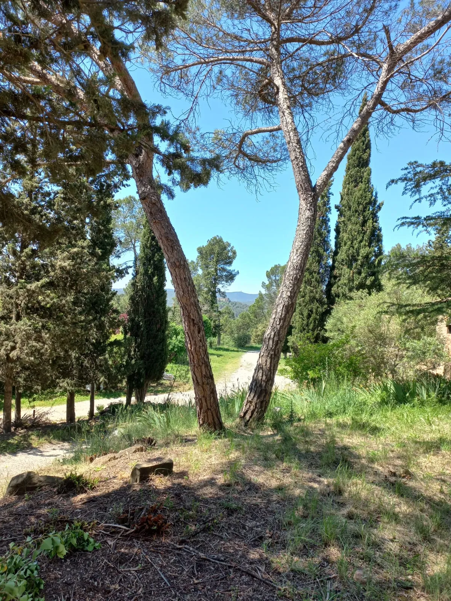
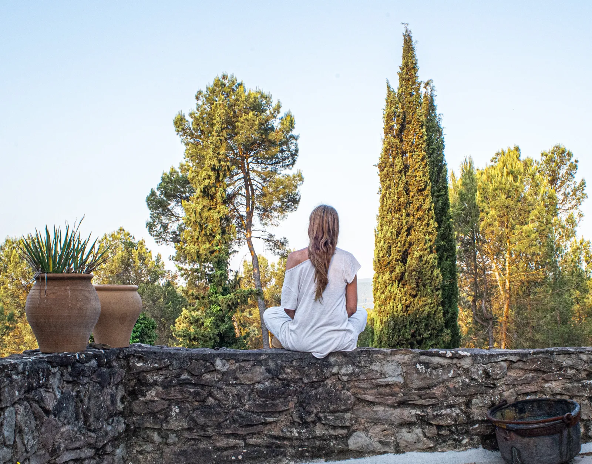
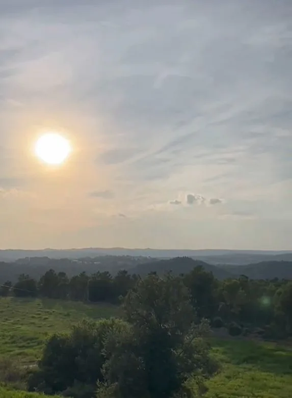
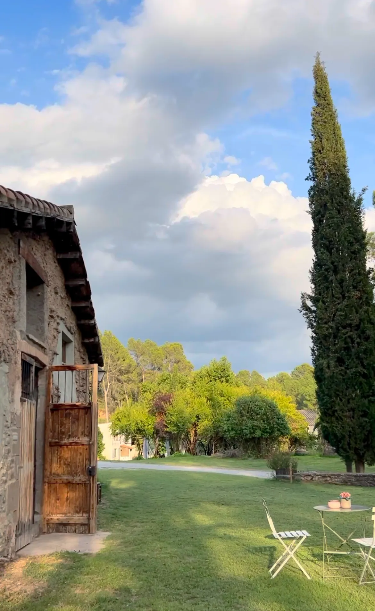

Más que una estancia
Experiencias en Mas Collades
Vida en común con la naturaleza, el vino de la DO Pla de Bages y un viaje al pasado que empieza en el mismo celler.
Enoturismo · Exclusiva
"Viatge al passat" — Viaje al pasado
Una experiencia enoturística pensada para descubrir la historia de la viña en el Bages a través de un recorrido emotivo y riguroso por nuestras instalaciones.

Tres pasos que conectan tres siglos
- Barraca de viña antigua: visita guiada a un elemento patrimonial de pedra seca único en el territorio.
- Celler histórico (en la casa principal): recorrido por la tradición elaboradora de la masia desde el siglo XVII.
- Tast de vins DO Pla de Bages: dirigido por el sommelier profesional Christian Betoret, con su experiencia y pasión por el mundo del vino.
Barraca de pedra seca
Arquitectura tradicional de la viña, única en la comarca, testigo de siglos de cultivo.
Celler del s. XVII (casa principal)
Muros de piedra, tines y el ambiente fresco donde se elaboraba el vino de la masia, en la casa principal.
Tast guiado
Vinos de la DO Pla de Bages explicados por Christian Betoret, nuestro sommelier.
Precios y duración
Experiencias guiadas
Todas las experiencias tienen una duración de 2 a 2 horas y media. Precios por persona.

Plantas y alambique
Hidrolatos de plantas aromáticas
Recogemos juntos las plantas aromáticas de la finca —romero, tomillo, salvia, lavanda y otras— y destilamos hidrolatos en alambique, siguiendo un oficio de siempre.
- Paseo de recolección por el huerto y el monte
- Destilación en alambique y explicación del proceso
- Te llevas tu propio hidrolato elaborado
35 € / persona

Bienestar
Taller de iniciación a la meditación
Una sesión para empezar a meditar sin prisa: respiración, presencia y silencio, en el jardín o en la casa, en un entorno que invita a parar.
- Práctica guiada para principiantes
- Espacios de la masia pensados para el silencio
- Sin experiencia previa necesaria
25 € / persona
Hidrolatos con alambique — 35 € / persona
Iniciación a la meditación — 25 € / persona
Vida compartida
La vida en la masia
Los huéspedes viven la finca a su ritmo: el huerto, las gallinas, la leña preparada y el silencio, con intimidad total en el Antiguo Granero.
Al huerto
Baja a ver si hay algún producto que recoger y úsalo en la cocina de la casa.
Las gallinas
Saluda a las gallinas por la mañana y recoge los huevos frescos del día.
Leña
Hay leña cortada lista para la chimenea; si quieres, puedes recoger del bosque para el invierno que viene.
Meditación
Sesiones y espacios de mindfulness, yoga y silencio en el jardín o en la casa.
Camagrocs
En temporada, el bosque rodea la masia: se pueden recoger camagrocs (míscaros) siguiendo la tradición del Bages.
Plantas aromáticas
Romero, tomillo, salvia, lavanda y más, repartidos por la finca para oler, recoger y llevar a la cocina.
También en Mas Collades
Naturaleza, cultura y grupos

Rutas y naturaleza
Senderismo por forns de calç, fonts, la Serra de Castelltallat y el Castell de Balsareny. Observación de flora y fauna.

Empresas y retiros
Team building, coaching, mindfulness y experiencias gastronómicas para equipos en un entorno inspirador.

Visita guiada a la masia
Recorre la masia con nosotros: la casa principal, el celler histórico del siglo XVII y la vida de la finca, contada por quienes la viven.